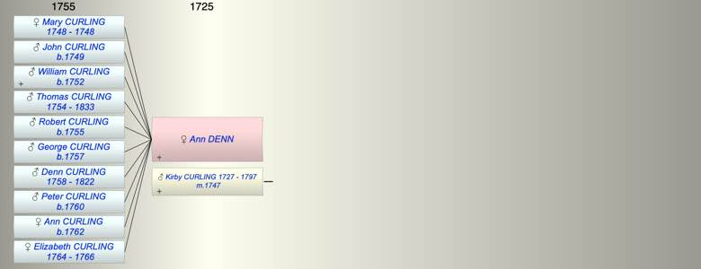

| [Index] |
| Ann DENN |
|  |
| m. 14 Jul 1747 Kirby CURLING (1727 - 1797) at Reculver, Kent |
| Events in Ann DENN's life | |||||
| Date | Age | Event | Place | Notes | Src |
| 14 Jul 1747 | Married Kirby CURLING (aged 20) | Reculver, Kent | Note 1 | ||
| 1748 | Birth of daughter Mary CURLING | Wooton | Note 2 | ||
| 1748 | Death of daughter Mary CURLING | Wooton | |||
| 1749 | Birth of son John CURLING | Wootton | Note 3 | ||
| 1752 | Birth of son William CURLING | Wootton | Note 4 | ||
| 1754 | Birth of son Thomas Kirby CURLING | Wootton | bap 28 Feb 1754 ex FMP PR | ||
| 1755 | Birth of son Robert CURLING | Wootton | Note 5 | ||
| 1757 | Birth of son George CURLING | Wootton | Note 6 | ||
| 1758 | Birth of son Denn CURLING | Wootton | bap 21 Oct 1758 ex FMP PR | ||
| 1760 | Birth of son Peter CURLING | Wootton | Note 7 | ||
| 1762 | Birth of daughter Ann CURLING | Wootton | Note 8 | ||
| 1764 | Birth of daughter Elizabeth CURLING | Sandwich | Note 9 | ||
| 1766 | Death of daughter Elizabeth CURLING (aged 2) | Sandwich | Note 10 | ||
| 1797 | Death of husband Kirby CURLING (aged 70) | Tilmanstone | Note 11 | ||
| 1822 | Death of son Denn CURLING (aged 64) | Sandwich | aged 64 | ||
| 1833 | Death of son Thomas Kirby CURLING (aged 79) | Sandwich | Note 12 | ||
| Created on a Mac™ using iFamily for Mac™ on 8 Oct 2023 |